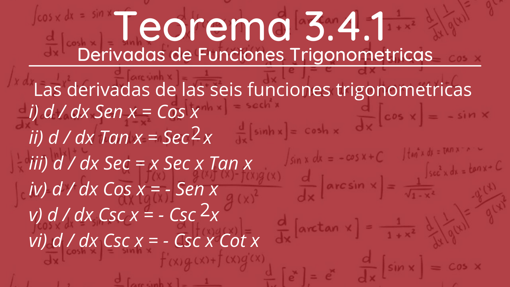
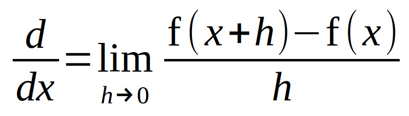
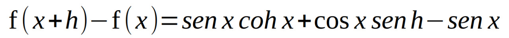
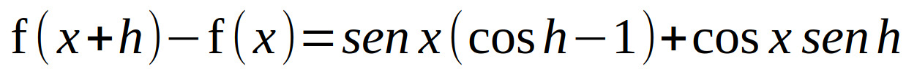

3.4 Funciones Trigonométricas
La derivación de las funciones trigonométricas es el proceso matemático de encontrar el ritmo al cual una función trigonométrica cambia respecto de la variable independiente; es decir, la derivada de la función. Las funciones trigonométricas más
habituales son las funciones sen(x), cos(x) y tan(x). Por ejemplo, al derivar f(x) = sen(x), se está calculando la función f'(x) tal que da el ritmo de cambio del sen(x) en cada punto X.
Las razones
trigonométricas de un ángulo α son las obtenidas entre los tres lados de un triángulo rectángulo. Es decir, las comparaciones por su cociente de sus tres costados a, b y c.
Teorema 3.4.1
3.4.1 Derivadas Del Seno Y Coceno
La derivación de las funciones trigonométricas es el proceso matemático de encontrar el ritmo al cual una función trigonométrica cambia respecto de la variable independiente; es decir, la derivada de la función, las funciones trigonométricas más
habituales son las funciones sen(x), cos(x) y tan(x).
Esta la podemos encontrar con la derivada de f(x)=sen x cuando usamos su derivación básica de la derivada.


Pero donde x y h desempeñan las partes símbolos x 1 y x 2


Se factoriza sen x de los términos primero y tercero
